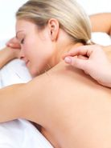

Acupunctuur die luistert
Kathleen Truyens behandelt elke patiënt als uniek — met acupunctuur, moxa, gua sha en persoonlijk voedingsadvies voor een gezonder evenwicht.

Wie ben ik?
Kathleen's interesse voor de Chinese geneeskunde gaat terug tot haar kindertijd, geprikkeld door haar grootouders die acupunctuur al jaren toepassen met verbluffende resultaten.
Als kinesist merkte ze dat niet alle patiënten geholpen zijn met Westerse behandelingen. Op 23-jarige leeftijd besloot ze acupunctuur te studeren. Sinds 2012 is ze een erkend acupuncturist en lid bij Acupunctuur Vlaanderen.
"Elke patiënt is uniek — en daarmee ook elke klacht en behandeling."
Kathleen blijft haar kennis verder uitbreiden met bijscholingen in onder meer Dry Needling, sportacupunctuur, electroacupunctuur en fertiliteitsacupunctuur.
Opleidingen
- Postgraduaat Acupunctuur — Yin Tang Acupuncturschool KHBO
- Master Revalidatiewetenschappen & Kinesitherapie — UGent / KUL / VUB
- Erkend acupuncturist — Acupunctuur Vlaanderen (EUFOM)
Recente bijscholingen
- Jin-3 Needle Acupuncture Technique (2026)
- Dry Needling — Trigger (2025)
- Borstkanker & acupunctuur — ICZO (2024)
- OsteoAcupunctuur / Sportacupunctuur — ICZO (2023)
- Electroacupunctuur stimulatie — ICZO (2019)
- Fytotherapie — Chinese kruidenleer — ICZO (2014/'15)
Behandelingen
De behandelingen bestaan uit een combinatie van verschillende aspecten van de Traditionele Chinese Geneeskunde.
Acupunctuur
Steriele naalden worden geplaatst in acupunctuurpunten op de meridianen (energiebanen) om het verstoord evenwicht in het lichaam te herstellen.
Moxa
Gedroogde bijvoet verwarmt de acupunctuurpunten tot diep in het lichaam — versterkt de energiestroom en ondersteunt het genezingsproces.
Bewegings- & Voedingsadvies
Een gezonde levensstijl is fundamenteel. Kathleen adviseert over beweging (3-4 uur per week) en voeding als medicijn voor je organen.
Waarvoor kunt u terecht?
FAQ
Is acupunctuur pijnlijk?
Het prikken van de acupunctuurnaalden wordt nauwelijks als pijnlijk ervaren. De naalden zijn extreem fijn en dun.
Hoe lang duurt een behandeling?
Een behandeling duurt ongeveer 1 uur. De eerste consultatie omvat ook uitgebreide diagnostiek (bevraging, pols- en tongdiagnose).
Bestaat er risico op besmetting?
Nee. Door het gebruik van steriele wegwerpnaalden wordt het risico op besmetting volledig uitgesloten.
Is acupunctuur gevaarlijk?
Acupunctuur is niet gevaarlijk indien het door een erkend therapeut wordt uitgevoerd. Bij zwangerschap zijn bepaalde punten gecontra-indiceerd — Kathleen houdt hier rekening mee.
Welk resultaat mag ik verwachten?
Na 5 behandelingen op wekelijkse basis moet er reeds beterschap zijn. Hoe acuter de klacht, hoe sneller het resultaat. Chronische klachten vragen wat meer geduld.
Wat is de eerste consultatie?
De 1e consultatie bestaat uit diagnostiek (bevraging, observatie, pols- en tongdiagnose) gevolgd door een eerste behandeling afgestemd op uw situatie.
Afspraak maken
Adres
Potterstraat 4
9170 Sint-Pauwels
(Sint-Gillis-Waas)
Telefoon
Consultatie
Op afspraak